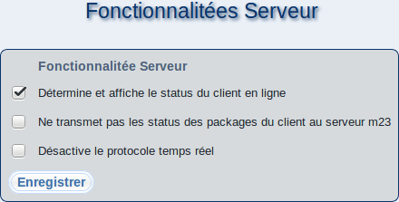

suivant:
Paramètres Xhprof
monter:
Serveur
précédent:
Choix du thème
Table des matières
Fonctionnalitées Serveur

Sur cette page, vous pouvez activer les fonctionnalités m23 optionnelles.
Pour activer / désactiver une fonctionnalité, cochez / décochez la case correspondante. Cliquez sur
''Enregistrer''
pour accepter les changements.
root 2019-06-03